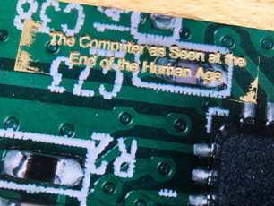
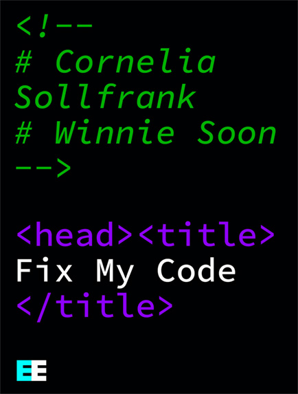
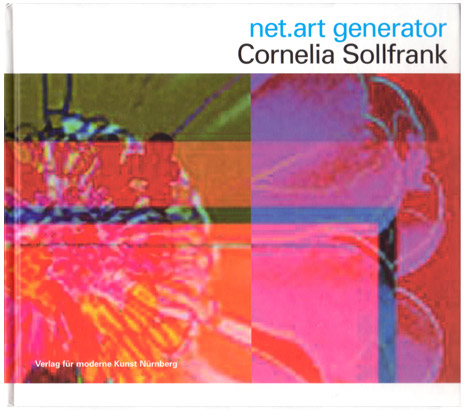
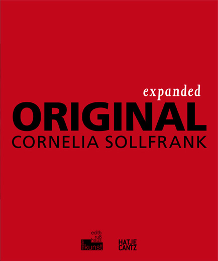
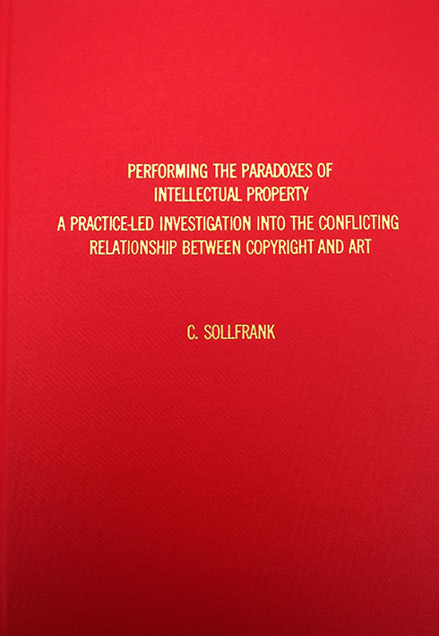

The Computer as Seen at the End of the Human Age
Swedish artist and artistic publisher Olle Essvik put together the wonderful book "The Computer as Seen at the End of the Human Age,“ which is a reference to the exhibition “The Machine as Seen at the End of the Mechanical Age”, curated by Pontus
Hultén for MoMA in 1968. In the updated edition, one encounters new works by a selection of artists, specifically invited to use algorithms/AI to contribute to a continuous, self-reproducing, anachronistic, machine aided recording of
history.
Our contribution is a collaboration with artist/critical technologist Winnie Soon and consists of the project nag_Bash.sh, a script that has automatically produced a series of anonymous_warhol-flowers, every day at the set time, for the duration
of the project. All results are included in the book.
Participating artists: Geraldine Juárez, Cornelia Sollfrank/Winnie Soon, Mishka Henner, Shane Hope, !Mediengruppe Bitnik, Rosa Menkman, Rosemary Lee, Olle Essvik, Evan Roth, Jonas Lund, Darsha Hewitt, Carl-Johan Rosén, Linda Hilfling Ritasdatter
and Jacek Smolicki.
→ Detailed information

Fix My Code, Cornelia Sollfrank and Winnie Soon
ebook, English
EECLECTIC Berlin
Creative Commons: Attribution-ShareAlike 4.0 International (CC BY-SA 4.0)
ISBN 978-3-947295-49-4
→ Detailed information

net.art generator, Cornelia Sollfrank
artist monograph, bilingual
Ed. Annette Schindler, plug.in, Basel
Verlag für Moderne Kunst Nürnberg, 2004
ISBN 978-3936711301, Preis: 24,00 EUR
→ Detailed information
→ Review by Matthias Weiss English | German

Expanded ORIGINAL, Cornelia Sollfrank
artist monograph, bilingual
Ed. Sabine Himmelsbach, Edith Russ Site for Media Art, Oldenburg 2009
Hatje Cantz Verlag, Ostfildern, Germany
ISBN 978-3-7757-2390-9, Preis: 25,00 EUR
→ Detailed information
→ Review by Susana Zaragoza
→ Review by Alessandro Ludovico
REVIEWS
Inke Arns, Der Algorithmus als Produzent
Publiziert in: Kunstforum Band 240, 2016, Titel: Get involved!, S. 132
Felix Stalder, Kritische Strategien zu Kunst und Urheberrecht
Publiziert in: Kunstforum, Band 201, 2010, S.110-117
TEXTS
Eric Snodgrass and Winnie Soon
API practices and paradigms: Exploring the protological parameters of APIs as
key facilitators of sociotechnical forms of exchange
Verena Kuni
generatrix (English) | generatrix (German)
Ute Vorkoeper
Programmed Seduction | Programmierte Verführung
Sarah Cook
What would Artificial Intelligence find aesthetically pleasing?
The burning question of generative art (and its audience)
Was würde eine künstliche Intelligenz als schön empfinden?
Die brennende Frage nach 'generativer Kunst' und ihrem Publikum
Jacob Lillemose
Keep on Generating! On Cornelia Sollfrank's Multiple Authorships
Keep on Generating! Über Cornelia Sollfranks multiple Autorschaften
Rahel Puffert
Does not concern Cornelia Sollfrank alone: Dialogue as a Condition of Aesthetic Production
Betrifft nicht Cornelia Sollfrank allein: der Dialog als Bedingung ästhetischer Produktion
Gerald Raunig
Machinic Virtuosity
Maschinische Virtuosität

Performing the Paradoxes of Intellectual Property – A practice-led Investigation into the Increasingly Conflicting Relationship between Copyright and Art,
Cornelia Sollfrank
PhD thesis, University of Dundee, 2012
→ Detailed information